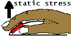

|
Input devices: a usage-driven approach
|
Some of these accessories are valuable, but a lot of
them are gimmicky, if not downright dangerous.
Pascarelli & Quilter in
Repetitive stress
injury
|
I am writing this essay to summarize my years of
experiments with input device design. My interest is born
out of a long-lasting typing injury, but I have no formal
training in ergonomics. I hope to provide a critical and
realistic view of what can be done to improve input devices.
The goal of course is to fundamentally reduce the strain on
hands and arms when using the computer. It is actually
possible, I believe, to work in a fashion that is
dramatically easier on hands, arms, and shoulders. There is
no miracle: it involves (1) speech recognition and mastery
of a system of voice commands (2) use of a reduced-impact
pointing device that may be shoved around by one or two
hands, and (3) a foot pedal arrangement.
Neither of these techniques are commercially available; nor
have they been tested in long-term experiments by
others—the expensive and only way of establishing claims
of ergonomic superiority. However, the proposals I present
have been subjected to my own daily usage for several years.
They represent but a fraction of ideas and commercial
products that I have attempted to use long-term.
The main point of this essay is that input device design
is very difficult, even though there are often simple
explanations why a design is potentially injurious. I will
give several examples of input device designs that are
superficially appealing, but seemingly devoid of functional
qualities that make them usable in ways that fundamentally
reduce physical stress. Rather, by their very
construction, some alternative designs hold the potential of
being more harmful then the traditional designs they are
intending to replace.
The patent literature is brimming with input device ideas.
Engineers, doctors, and lay people have investigated mouse
surface curvatures, twistings of the keyboard, wearable
gizmos, etc. These initiatives apparently have had little
impact in reducing pain and injury from computer use.
Even the popular "ergonomic" split keyboards have not been
shown to have any health benefits; a proof, if possible,
would involve long-term studies involving thousands of
individuals. The theory that these keyboards are easier on
body because they involve less “deviation” of the hands
relative to the forearm is plausible. But maybe more
plausible is the opposite hypothesis: what matters is only
how you use the keyboard. Moreover, the opposite hypothesis
argues that since the standard keyboard is smaller it better
allows your hands to manipulate the mouse and to find a
resting position. So, it is already clear that the
so-called “ergonomic” keyboards are “ergonomic” in name
only; they represent another compromise among a host of
competing design constraints.
This kind of analytical
thinking about various stresses on the body incurred by use
of devices is important to anybody who is struggling with
pain from computing, since it is one way of raising body
awareness. This is especially true since the innumerable
negative experiences with “ergonomic” equipment go
unreported. Whether it be a speech recognition program or
an especially “ergonomic” mouse design, the technology is
usually disappointing. The defeat is not broadcast to
colleagues and friends.
Why do keyboards and mice hurt people? Nobody seems to
really know. At a cellular level, the processes behind CTD
remain a mystery, although it is believed that inflammation
is not a necessary component, see tendinosis.org for
pointers to medical literature. At the functional level, it
remains unproven that repetitive motion is to blame. For
example, another functional culprit could be the constant
stress the body is experiencing when near the devices.
To understand this, think about replacing each key on the
keyboard and each button on the mouse with a little hot
plate glowing red. If you were working next to such a
monstrous instrument, then you would condition your limbs to
be constantly adjusting themselves so as not to touch any of
more than one hundred hot plates. The point is, of course,
that even when keyboard and mouse do not posses thermal
properties, your body must be conditioned exactly the same
way.
The mouse is particularly bad, since the hand tends to ride
it. Consequently, fingers must be forced upwards to not
press the hot plates. Extensor muscles, the arms'
weakest ones, are continuously struggling to keep this
unnatural balance even if the brain thinks that the hand is
at rest. Interestingly, preschool kids struggle quite a bit
with this likely injurious principle. Whereas they may
easily learn to type out their own name on the keyboard, it
may take several more months for them to learn to hold the
mouse without pressing the buttons—an indication that the
mouse is anything but natural.
In my judgement, there are three areas where new thinking
may lead to less pain when using a computer. For the
keyboard, there is only little room for improvement—still
I have some modest ideas, see keyboard. In contrast,
the mouse may be an essentially harmful device that cannot
be improved within its traditional design constraints—see
my proposal in mouse for a
different concept. Finally, I suggest how foot pedals can
very effectively complement a keyboard or speech recognition
for repetitive tasks in foot pedals.
My opinions and proposals are the result of a decade of
personal experimentation and observation. That's why I call
this overview a "usage-driven approach". The information I
offer here should not be construed as advice. I do not know
whether my observations are generally applicable. If you
have pain, then go see a doctor. The only recommendation I
offer to others with typing or mouse injuries is to look in
the excellent book Repetitive strain injury by Emil
Pascarelli and Deborah Quilter (John Wiley and Sons, 1994).
|
 printer-friendly version
printer-friendly version e-mail Klarlund
e-mail Klarlund Nils
Klarlund home
Nils
Klarlund home